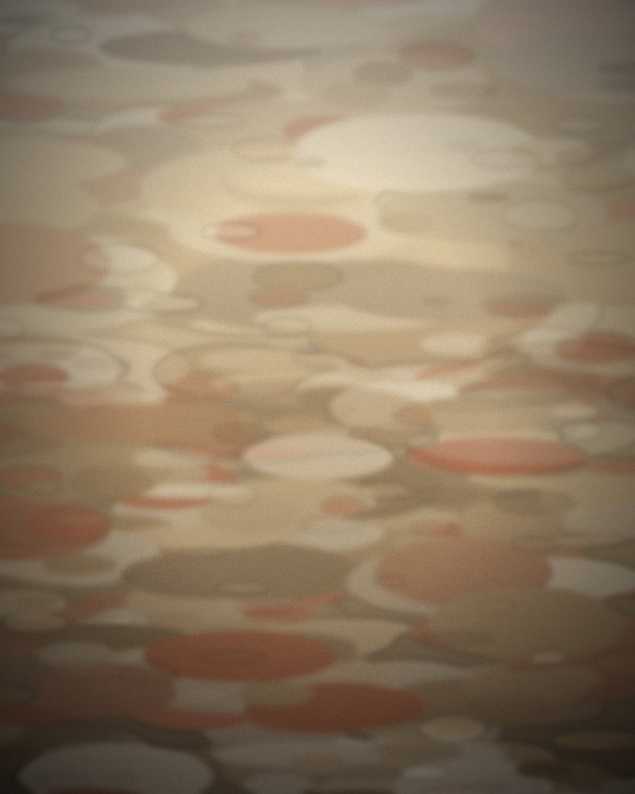

Paintings of
the British landscape
Oil on canvas and board, worked from life and from memory across the dales, estuaries and field margins of northern England.
Morning Light over Swaledale · Oil on canvas · 2025
Selected work
Recent paintings
A small selection from the current body of work. The full collection sits in the gallery.

About
Light, weather, and the places in between
I paint the ordinary parts of the landscape — a verge, a field margin, the turn of a river — where the light does something worth staying for.
Most paintings begin outdoors in small oil studies and are finished in the studio, where colour can be pushed a little further than the day allowed. I work slowly, and in series.